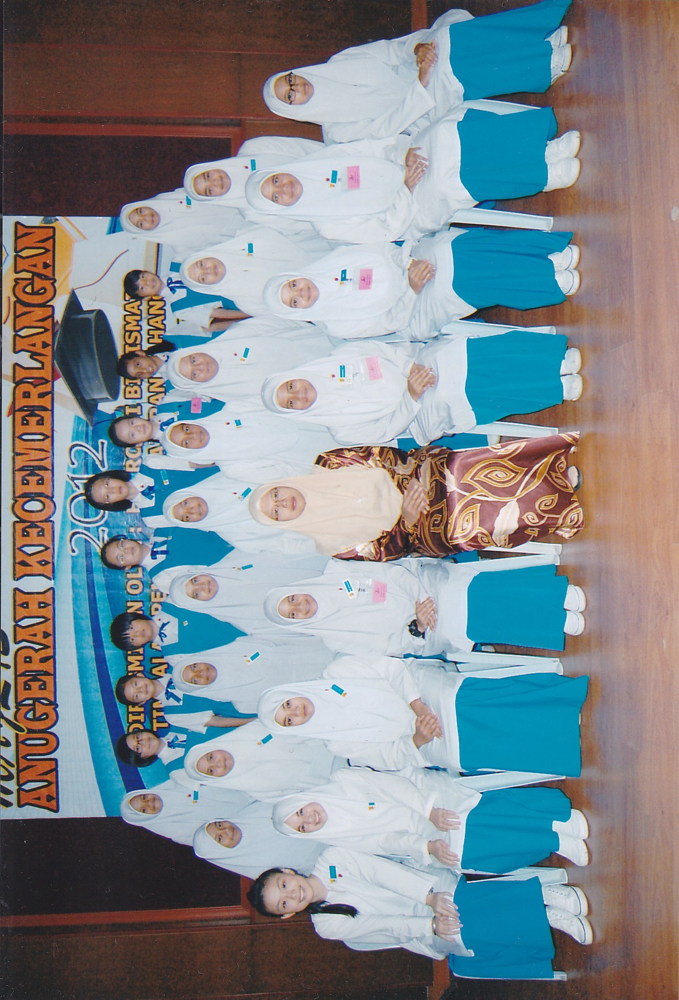
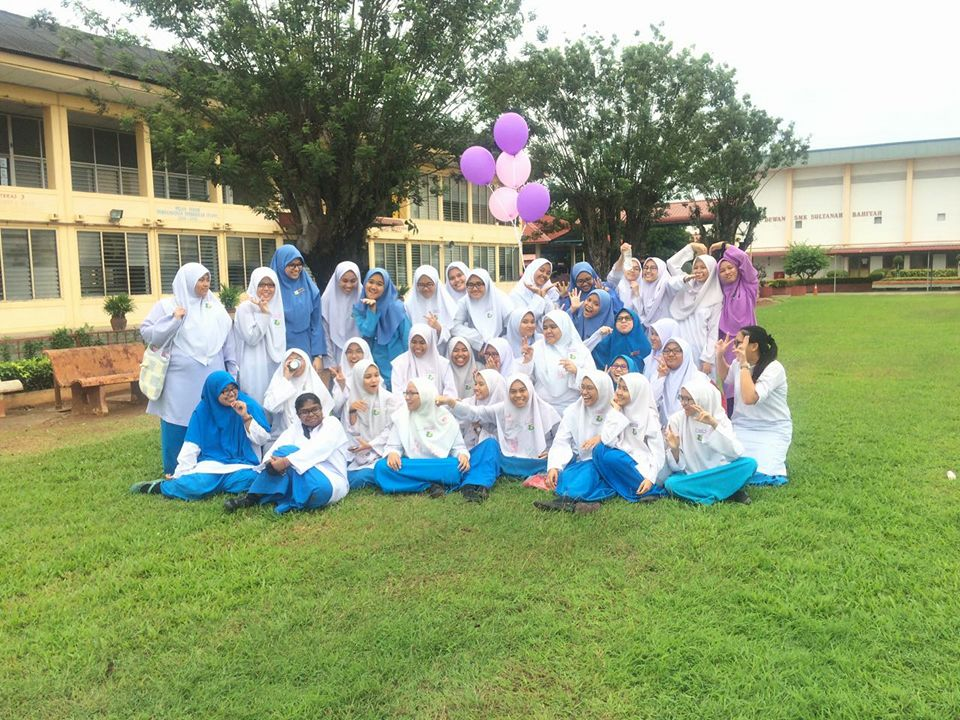
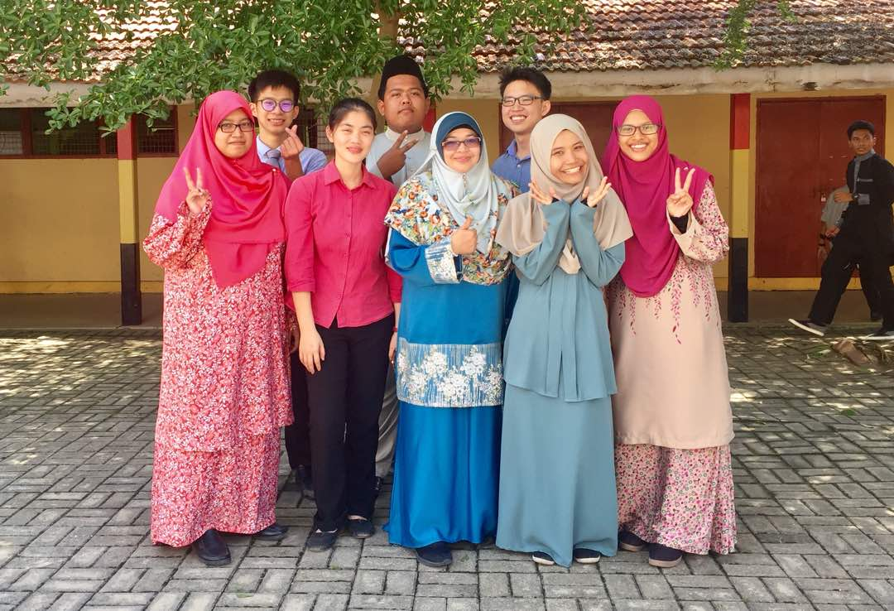
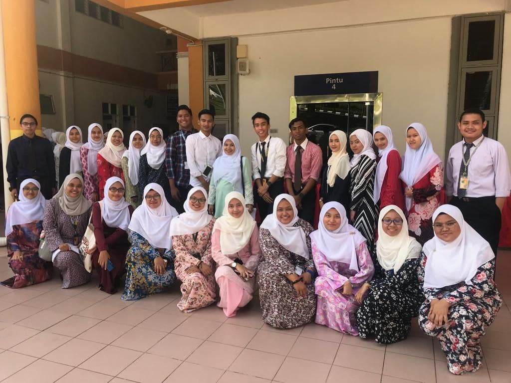

| Home | Biodata | Experience | Education | Family | Gallery |
| Methodist Girl Secondary School (MGSS) Kuantan
2012-2013 |
 |
|  | Sekolah Menengah Kebangsaan Sultanah Bahiyah
2014-2016 |
| Kolej Sultan Abdul Hamid
2017-2018 |
 |
|  | Universiti Teknologi MARA (UiTM) Cawangan Machang
2019-2022 |